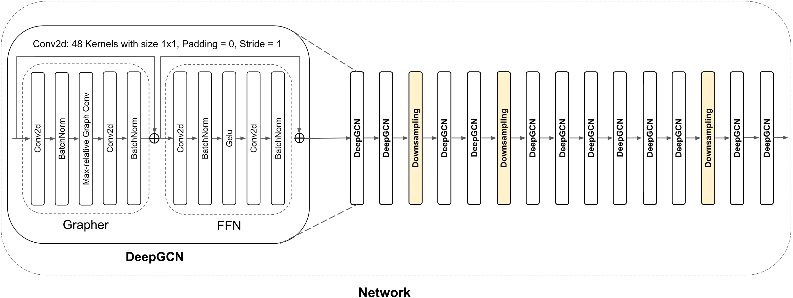

Non-Insulin-Dependent Diabetes Mellitus (NIDDM) is a chronic health
condition caused
by high blood
sugar
levels, and if not treated early, it can lead to serious complications i.e.
blindness. Human Activity
Recognition (HAR) offers potential for early NIDDM diagnosis, emerging as a
key
application for HAR
technology. This research introduces DiabSense, a novel smartphone-dependent
system
for early staging
of
NIDDM to address the global challenge of undiagnosed diabetes. DiabSense
incorporates HAR and Diabetic
Retinopathy (DR) grading into a unified framework using advanced Graph
Neural
Networks (GNNs). HAR
uses
a comprehensive array of 23 human activities resembling Diabetes symptoms,
and DR is
already a
prevalent
complication of NIDDM. Graph Attention Network (GAT) in HAR achieved 98.32%
accuracy
on tri-axial
accelerometer human activity sensor data, while Graph Convolutional Network
(GCN) -
Vision GNN in the
Aptos 2019 retinal fundus dataset scored 84.48% for DR severity grading
task,
surpassing other
state-of-the-art models. The trained GCN analyzed retinal images of four
experimental human subjects
for
DR report generation, and GAT generated their average duration of daily
activities
over 30 days. The
daily activities in non-diabetic periods of diabetic patients were measured
and
compared with the
daily
activities of the experimental subjects, which helped generate risk factors.
Fusing
risk factors with
DR
conditions enabled early diagnosis recommendations for the experimental
subjects
despite the absence
of
any apparent symptoms. The comparison of DiabSense system outcome with
clinical
diagnosis reports in
the
experimental subjects was conducted using the A1C test. The test results
confirmed
the accurate
assessment of early diagnosis requirements for experimental subjects by the
system.
Overall, DiabSense
exhibits significant potential for ensuring early NIDDM treatment, improving
millions of lives
worldwide.
Vision GNN (ViG) considers each pixel of a 2D image as a node, enabling
richer structural representation and addresses CNNs’ limitations with
irregular
lesions present in
fundus images.
GAT addresses the clallenges of Long Short-Term Memory (LSTM) and Deep
Bayesian
Network (DBN) based
models with efficient attention mechanisms that captures varying node
importance and
neighborhood
sizes
without full graph knowledge.
We aimed at augmenting, rather than
replacing, clinicians during clinical decision making since clinicians are
involded
in the sytem
during
decision making. DiabSense reduces the need for expensive routine medical
checkups
and reliance on
symptoms until the system alerts for an 'early diagnosis positive'. Since
NIDDM
symptoms are often
absent in the early stages, undiagnosed patients gain an opportunity to
begin
medical treatment as
soon
as DiabSense detects a risk.
Figure: Overview of the DiabSense
system architecture.
Figure: Graph Convolutional Network
- Vision GNN overall architecture for DR grading.Figure: Graph Attention Network
architecture for Human Activity Recognition.

Figure: Vision GNN Network layer.
Figure: A continuous eleven hours
sample
of unlabelled triaxial accelerometer sensor data from experimental
subject-1.
Diabetic Retinopathy (DR) is a serious eye condition that occurs due to high
blood
sugar levels in
patients with Diabetes Mellitus. If left untreated, DR can potentially
result in
blindness. Using
automated neural network-based methods to grade DR shows potential for early
detection. However, the
uneven and non-quadrilateral forms of DR lesions provide difficulties for
traditional Convolutional
Neural Network (CNN)-based architectures. To address this challenge and
explore
a
novel algorithm
architecture, this work delves into the usage of contrasting cluster
assignments
in
retinal fundus
images with the Swapping Assignments between multiple Views (SwAV) algorithm
for
DR
grading. An
ablation
study was made where SwAV outperformed other CNN and Transformer-based
models,
independently and in
ensemble configurations with an accuracy of 87.00% despite having fewer
parameters
and layers. The
proposed approach outperforms existing state-of-the-art models regarding
classification metrics,
complexity, and prediction time. The findings offer great potential for
medical
practitioners,
allowing
for more accurate diagnosis of DR and earlier treatments to avoid visual
loss.
Figure: Inconsistency among
ophthalmologists in Diabetic Retinopathy grading.Figure: Framework for Diabetic Retinopathy severity grading with SwAV model.
Understanding and accurately predicting complex three-dimensional (3D)
temperature
distributions are critical in diverse domains, including climate science and
industrial
process optimization. This study presents a sophisticated framework
employing a
convolutional neural network (CNN)–based autoencoder (AE) architecture
augmented
with
attention mechanisms for the efficient compression and reconstruction of 3D
temperature
distribution datasets. The framework integrates Singular Value Decomposition
(SVD)
analysis to
ascertain
the
optimal latent space dimensionality, thereby ensuring a judicious balance
between
model
complexity and reconstruction fidelity. Moreover, the autoencoder is trained
using a
customized loss function designed to prioritize higher temperature values,
enhancing
the
reconstruction accuracy in critical regions—mathematically defined as
regions
where
T > 675 °C. This ensures enhanced reconstruction
accuracy
in
areas of
significant thermal importance, which are critical for the accuracy of the
model.
Through systematic
exploration of the latent space dimensionality and the relative
weighting of non-zero temperature data points, optimal parameters are
identified
that
maximize the coefficient of determination score. Empirical results indicate
that
optimal
performance is achieved with a latent space size of six, incorporating a
relative
weight
value of 4.5 for non-zero temperature data points and appropriate handling
of
zero-temperature data points. After evaluating the model for both zero and
non-zero
temperature data,
the
R2 scores improved from 95.80% to 99.27%, demonstrating a
significant
enhancement in overall accuracy. This proposed methodology provides profound
insights into
the intrinsic structure of the data and offers highly accurate predictions
for
applications necessitating detailed spatial and temporal temperature
analyses.
Figure: Overall framework of compressing 3D volumetric temperature distribution image data into an optimal latent space size.Figure: (a) Temperature distribution for case:0 3D image; Cross-sectional temperature distribution along the (b) x-axis, (c) y-axis, and (d) z-axis for case:0 3D image.


.png)